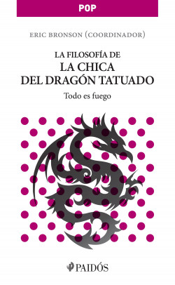

La Chica del Dragon Tatuado
De la incansable lucha de Stieg Larsson contra la injusticia, y de su profunda preocupación por los derechos de las mujeres, da cuenta su Trilogía Millennium, saga que ha inspirado los ensayos filosóficos de este libro. La ingeniosa trama de crimen y corrupción protagonizada por Lisbeth Salander es el punto de partida para analizar las diversas formas de intolerancia y exclusión, como el antisemitismo y la eugenesia; para reflexionar sobre el ... Ver más Ocultar De la incansable lucha de Stieg Larsson contra la injusticia, y de su profunda preocupación por los derechos de las mujeres, da cuenta su Trilogía Millennium, saga que ha inspirado los ensayos filosóficos de este libro. La ingeniosa trama de crimen y corrupción protagonizada por Lisbeth Salander es el punto de partida para analizar las diversas formas de intolerancia y exclusión, como el antisemitismo y la eugenesia; para reflexionar sobre el poder de las instituciones, la autoridad y los estigmas que pesan sobre las personas etiquetadas como anormales. Protagonista queer de un entramado de transgresiones, Lisbeth se planta ante la teoría de género contemporánea para reinventar las concepciones de hombre y mujer. Entre abundancia de café, en La filosofía de la chica del dragón tatuado se convoca a Marx y Engels, a Beauvoir y Sartre, desde el desencantado mundo de la starbuckización de nuestra sociedad. He aquí un libro para el lector perfecto, que según Nietzsche aparece siempre como un monstruo de valor y curiosidad. De la incansable lucha de Stieg Larsson contra la injusticia, y de su profunda preocupación por los derechos de las mujeres, da cuenta su Trilogía Millennium, saga que ha inspirado los ensayos filosóficos de este libro. La ingeniosa trama de crimen y corrupción protagonizada por Lisbeth Salander es el punto de partida para analizar las diversas formas de intolerancia y exclusión, como el antisemitismo y la eugenesia; para reflexionar sobre el poder de las instituciones, la autoridad y los estigmas que pesan sobre las personas etiquetadas como anormales. Protagonista queer de un entramado de transgresiones, Lisbeth se planta ante la teoría de género contemporánea para reinventar las concepciones de hombre y mujer. Entre abundancia de café, en La filosofía de la chica del dragón tatuado se convoca a Marx y Engels, a Beauvoir y Sartre, desde el desencantado mundo de la starbuckización de nuestra sociedad. He aquí un libro para el lector perfecto, que según Nietzsche aparece siempre como un monstruo de valor y curiosidad.
Referencias
- https://www.buscalibre.com.co/libro-la-filosofia-de-la-chica-del-dragon-tatuado/9786079202224/p/29762951
- Avanza Noveno 9